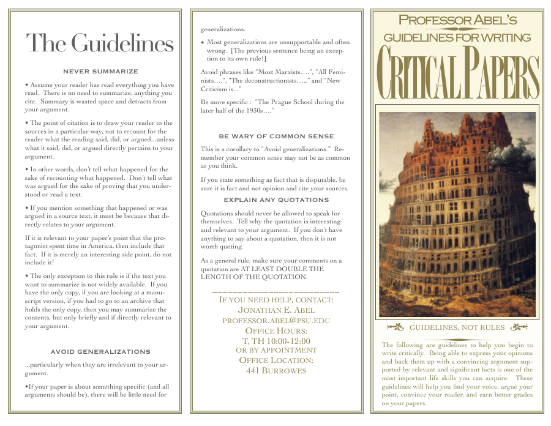
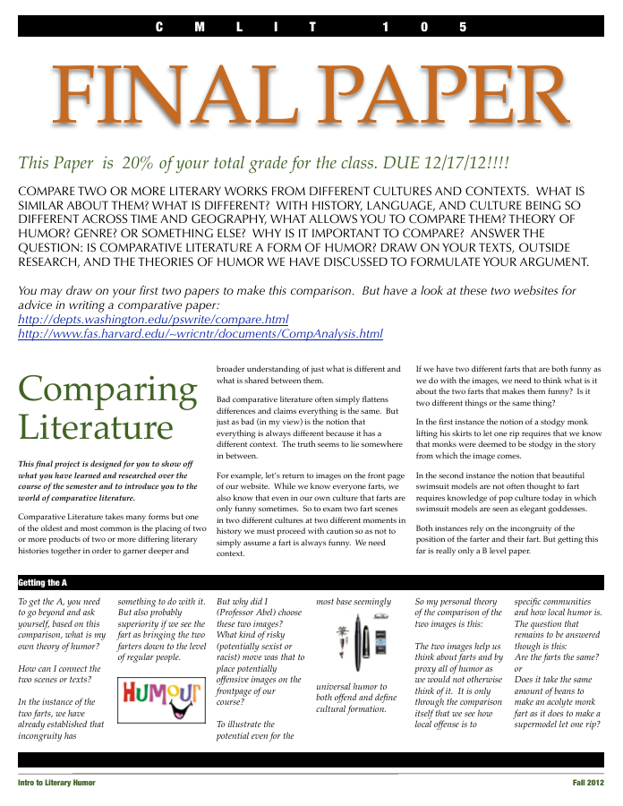
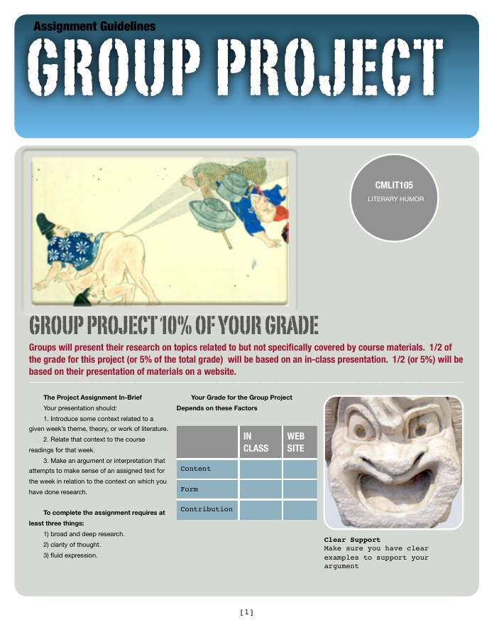
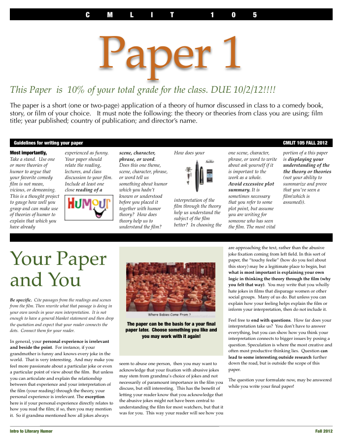
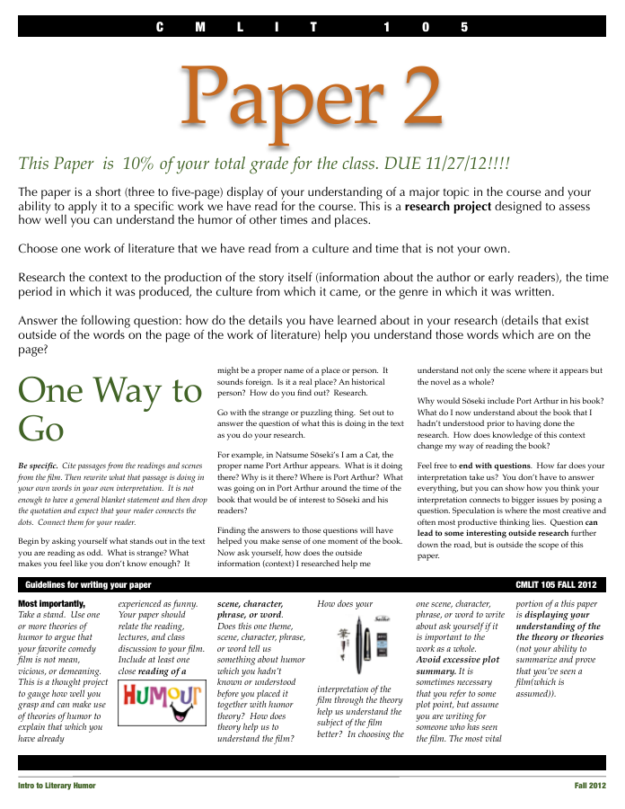

Docs
Documents
Guidelines for Papers
Grading Rubric for Papers
This is what you will receive with your grade


Mid Term 2
Possible Essay Questions

FINAL PAPER

Group Project description
Group Project Group Member List

group five slides
Paper 1 Assignment

Paper 2 Assignment
